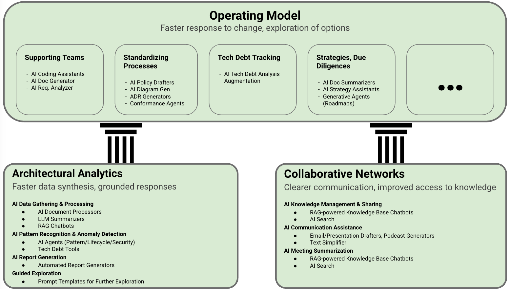

Next Steps: Leveraging The Potential of Generative AI
IN THIS SECTION, YOU WILL: Learn how you can responsibly leverage Generative AI as a powerful augmentation tool within to enhance efficiency, data-driven insights, and collaboration, provided you proactively manage its inherent risks and maintain critical human oversight.
KEY POINTS:
- Generative AI (GenAI) offers significant potential to augment your work as an IT architect by enhancing data analysis (Lightweight Analytics), improving knowledge sharing (Collaborative Networks), and streamlining tasks (Operating Model).
- Practical applications include accelerating analytics, generating ADRs and diagrams, augmenting requirements analysis, assisting solution design, improving code reviews, and drafting communications, ultimately freeing you up for higher-value strategic thinking.
- While GenAI promises increased efficiency, consistency, and better data-driven decisions, you must navigate challenges like accuracy issues (hallucinations), security risks, ethical considerations (bias), and the need for continuous human oversight and judgment.
- Responsible adoption requires a principled approach focusing on clear objectives, strong data governance, human-in-the-loop validation, grounding AI with RAG, and fostering an AI-literate culture within your organization.
- The future points towards real-time, augmented EA, agentic AI, and DTOs, further emphasizing the need for adaptability and evolving your role towards governing AI and focusing on strategic, collaborative, and ethical considerations.
This section explores the exciting intersection of Generative AI (GenAI) with IT Architecture, particularly through the lens of the Grounded Architecture framework.
Generative AI models are sophisticated tools that can create new content like text, computer code, images, and even complex designs. They are rapidly moving from experimental stages to practical, real-world applications, transforming industries and how businesses operate. The potential for GenAI to significantly improve IT and Enterprise Architecture (EA) is especially strong. Traditionally, architects have struggled to manage rapidly changing business needs with tools that are often slow, disconnected, and static. GenAI offers a chance to make architecture work more effective, automate repetitive tasks, and enable faster, more informed decisions based on data. This ushers in a new era of efficiency and innovation in the field.
However, using GenAI without a clear strategy could create more complexity or new problems. The Grounded Architecture approach provides a solid foundation for harnessing GenAI’s power while managing its risks. This section serves as a comprehensive and practical guide for IT and Enterprise Architects looking to integrate GenAI into their Grounded Architecture practices. We will cover GenAI’s capabilities, key ways to integrate it, common uses, potential benefits and challenges, best practices for responsible use, and what’s on the horizon. Our aim is to empower architects to use GenAI not just as another tool, but as a strategic asset within their architectural work.
In the appendix, you’ll find example Generateive AI prompts I used in practice for many of the tasks we will discuss in this section.
(To “eat my own dog food,” I drafted this report with initial research and insights from the Gemini Deep Research chatbot. I then refined the narrative and coherence using ChatGPT, a language generation model, and checked language and grammar with Grammarly. Finally, I manually edited it extensively to ensure accuracy and relevance.)
What Generative AI Can Do for Today’s Architect
Generative AI, or GenAI, refers to artificial intelligence systems trained on vast amounts of data to create new, realistic content—such as text, code, images, and designs—without simply copying the original data. Unlike traditional AI, which mainly analyzes data and makes predictions, GenAI is specifically designed for creation. Users typically interact with these models using plain language commands (prompts), unlocking a variety of capabilities highly relevant to IT and Enterprise Architects.
GenAI provides architects with powerful tools for creating, analyzing, automating, communicating, and making informed decisions:
- Creating and Improving Content: Quickly draft reports, technical documents, emails, meeting summaries, key decision logs (known as Architecture Decision Records or ADRs), code snippets, and initial architecture diagrams. Large Language Models (LLMs), a type of GenAI, are central to this.
- Analyzing Data and Spotting Patterns: Examine large volumes of information, both structured (like databases) and unstructured (like text documents), to find common issues in architecture (anti-patterns), security weaknesses, and outdated technology (technical debt). GenAI can also convert architectural diagrams into structured data for easier analysis.
- Automating Tasks for Greater Efficiency: Automate tasks like creating documentation, performing routine code reviews, generating standard reports, extracting requirements from documents, and brainstorming early solution ideas. This frees up architects to focus on more complex challenges.
- Improving Interaction and Communication: Power advanced chatbots and conversational assistants that provide instant access to company knowledge, answer questions about architecture, explain complex technical ideas simply, and share insights across the organization.
- Offering Recommendations and Suggestions: Propose potential solutions, recommend suitable technologies or architectural patterns, suggest optimizations, and outline transition plans. However, the final validation and decision-making always remain with the architects.
A critical technology for using GenAI in businesses is Retrieval-Augmented Generation (RAG). Standard GenAI models generate responses based only on the data they were initially trained on. RAG improves this by first searching for and retrieving relevant, up-to-date information from trusted company-specific sources—like internal documents, databases, or Enterprise Architecture repositories—before creating a response. This ensures that the AI’s output is based on current and reliable company data.
RAG is vital for making GenAI outputs trustworthy, accurate, and relevant to the specific business context. It helps reduce AI “hallucinations” (incorrect or nonsensical outputs), ensures decisions are based on verified knowledge, and strengthens the data-driven foundation of Grounded Architecture.
Integrating GenAI with Grounded Architecture: Connecting Capabilities to the Framework
Generative AI can enhance the architecture practice within the Grounded Architecture framework by improving data analysis, knowledge sharing, and operational efficiency. These enhancements can make the framework more scalable, dynamic, and impactful (Figure 1).

Figure 1: An overview of potential Generative AI potential in the context of the Grounded Architecture Framework.
By integrating GenAI capabilities into each part of Grounded Architecture, significant new value can be created:
- GenAI in Lightweight Architectural Analytics (Understanding the Current State)
- Gathering and Processing Data: Automate the collection, interpretation, and summarization of information from various sources like code repositories, cloud service bills, customer support tickets, and existing documentation. RAG can help query and consolidate scattered information.
- Recognizing Patterns and Anomalies: Improve the detection of architectural patterns, common pitfalls (anti-patterns), security vulnerabilities, outdated technologies, and accumulated technical debt using advanced GenAI analysis.
- Generating Reports and Dashboards: Automatically create architectural reports and visual dashboards from the analyzed data, making them available more quickly and consistently.
- GenAI in Collaborative Networks (Working Together)
- Managing and Sharing Knowledge: Transform static information stores, such as documents and Architecture Decision Records (ADRs), into dynamic, easily searchable knowledge bases using RAG-powered conversational interfaces (like chatbots).
- Assisting with Communication: Help draft clear communications tailored to specific audiences, whether they are technical colleagues or business executives, including emails, summaries, and explanations.
- Summarizing Meetings: Automatically generate summaries of meetings, capturing key decisions and action items from recordings or transcripts.
- GenAI in the Operating Model (How Architecture Gets Done)
- Supporting Coding and Documentation: Provide AI-powered assistance for writing code, creating technical documentation, and analyzing project requirements.
- Generating Architectural Artifacts: Automate or assist in creating architecture diagrams, Architecture Decision Records (ADRs), compliance documents, and operational reports.
- Tracking Technical Debt: Improve tools for analyzing technical debt by summarizing findings, identifying patterns, and prioritizing fixes based on their business impact. This includes flagging aging technologies.
- Speeding Up Due Diligence: Accelerate the review of technical documents during company mergers, acquisitions, or when evaluating new technologies by using GenAI for summarization.
- Standardizing Processes: Help draft standards, policies, governance procedures, and ADRs. AI agents can also check if proposed changes comply with these standards and maintain consistency.
- Developing Strategy: Assist in creating initial drafts of strategy documents (for areas like cloud adoption, data management, or technology platforms) by summarizing the current situation based on analytics and suggesting options for the future.
GenAI streamlines architecture work by automating analysis, improving communication, and accelerating strategy and decision-making across the Lightweight Architectural Analytics, Collaborative Networks, and Operating Model pillars.
Practical Examples: GenAI in Action
GenAI can significantly help architects by taking over repetitive tasks. This allows them to focus on more strategic thinking, weighing complex options, collaborating effectively, interpreting results, and applying human judgment—all core activities in the Grounded Architecture approach.
Use Case 1: Analysing Dependencies and Technical Debt
- Scenario: You need to assess how different microservices depend on each other and identify technical debt (like unnecessary connections or outdated software libraries).
- GenAI Application: Use GenAI to automatically parse and summarize data from code repositories, software deployment pipelines (CI/CD), and application performance monitoring (APM) tools. Employ RAG to search internal documentation for important context (like who owns what, or relevant company standards). AI agents or specialized technical debt tools can then identify problem patterns and aging technologies. Finally, GenAI can generate a draft report of these findings.
- Grounded Architecture Link: Directly accelerates Lightweight Architectural Analytics.
Use Case 2: Generating Architecture Decision Records (ADRs)
- Scenario: After a team discussion, you need to document a decision about which messaging queue technology to use.
- GenAI Application: GenAI can summarize meeting notes or recordings. You provide this summary and an ADR template to GenAI. Using RAG, the AI can access relevant context (like project requirements or related past decisions). GenAI then drafts key sections of the ADR (like the problem, the decision made, the reasons why, and the expected outcomes), which the architect reviews and finalizes.
- Grounded Architecture Link: Supports the Operating Model (by standardizing documentation) and Collaborative Networks (by capturing knowledge).
Use Case 3: Creating Architecture Diagrams from Descriptions
- Scenario: You need to quickly create a system overview diagram (like a C4 context or component diagram) for a discussion.
- GenAI Application: Use an AI-powered diagramming tool (e.g., Eraser.io, Diagramming AI). You describe the system, its parts, and how they connect using plain language. The tool generates an initial diagram, which you can then refine with more instructions or manual adjustments. Some tools can also create diagrams from code (Infrastructure as Code) or sketches.
- Grounded Architecture Link: Speeds up the creation of visuals for Collaborative Networks and supports design activities in the Operating Model.
Use Case 4: Improving Requirements Analysis
- Scenario: You have various inputs like user stories, emails, and meeting transcripts, and you need to combine them into a structured list of requirements.
- GenAI Application: Natural Language Processing (NLP) tools (a type of GenAI) can process these inputs to extract key requirements and user needs, summarize long documents, identify unclear statements or conflicts, help structure the information, and even draft initial acceptance criteria and test scenarios.
- Grounded Architecture Link: Supports the early design phase within the Operating Model, ensuring new solutions meet stated requirements.
Use Case 5: Assisting with Solution Design and Evaluation
- Scenario: You need to explore different architectural strategies for a new recommendation engine and evaluate them based on quality goals (like performance or security).
- GenAI Application: Use GenAI with RAG (giving it access to internal standards and data) to suggest relevant design patterns. It can generate initial descriptions and basic code structures. GenAI can also help evaluate options by summarizing technical documentation, performing competitor analysis, and finding performance benchmarks. Some advanced tools can even simulate how different designs might perform.
- Grounded Architecture Link: Supports design and strategy work within the Operating Model, using data and established patterns to guide decisions.
Use Case 6: Enhancing Code Review Processes
- Scenario: You need to review new code to ensure it meets company standards, identify potential bugs, check for security issues, and assess if it adds to technical debt.
- GenAI Application: Integrate AI-powered code review tools into your development pipeline (CI/CD process). These tools can scan code changes for style violations, errors, overly complex sections, and known bad practices. They can also identify security vulnerabilities, generate summaries for review, and sometimes suggest fixes.
- Grounded Architecture Link: Supports the Operating Model by improving code quality, enforcing standards, and reducing technical debt.
Use Case 7: Drafting Communications for Stakeholders
- Scenario: You need to explain a technical decision (like migrating to a new cloud platform) to business executives who may not have a technical background.
- GenAI Application: Provide the technical reasons and supporting data to GenAI. Instruct the AI to draft an executive summary or email in clear, business-friendly language, avoiding jargon. It can also effectively summarize complex reports for different audiences.
- Grounded Architecture Link: Makes Collaborative Networks more effective through clearer communication.
These use cases illustrate how Generative AI can enhance architectural practices by automating routine tasks and enabling architects to focus on strategic and high-value work. It helps streamline decision-making, improve documentation, enhance communication, and accelerate design processes, ultimately boosting efficiency and architectural quality.
Balancing Benefits, Risks, and Challenges
GenAI can significantly boost the core advantages of the Grounded Architecture framework. These benefits align well with the principles of Grounded Architecture: efficiency supports Pragmatism, faster data analysis underpins Data-Driven Decisions, better knowledge sharing enhances Collaborative Networks, and improved option evaluation fosters Adaptability:
- Increased Efficiency and Productivity: Automate and speed up tasks like drafting documents (e.g., Standard Operating Procedures, Architecture Decision Records), creating diagrams, analyzing data, and reviewing code. This saves valuable time, allowing architects to focus on strategic work.
- Improved Consistency and Quality: Ensure that all architectural documents and diagrams uniformly follow established standards and best practices. Consistent code reviews can reduce variations and minimize human error.
- Faster Data-Driven Decision Support: More quickly process, combine, and summarize diverse datasets for Lightweight Architectural Analytics. This leads to faster insights and the ability to uncover subtle patterns, supporting a core principle of Grounded Architecture.
- Enhanced Collaboration and Knowledge Sharing: Make the collective knowledge within Collaborative Networks easily accessible through RAG-powered chatbots and search tools. Clearer communication, aided by AI summarization and tailoring content for specific audiences, can also speed up onboarding for new team members.
- Fostering Innovation: By freeing up architects’ time, GenAI creates more space for innovation. It can help explore different design options and generate new ideas based on data patterns.
- Making Architectural Insights More Accessible: Present architectural information to non-technical stakeholders through conversational interfaces and visualizations. This aligns with Grounded Architecture’s goal of embedding architectural thinking throughout the organization.
However, benefits often come with risks (for example, gaining speed might sacrifice accuracy, or analyzing data might raise privacy concerns).
To realize these benefits, it’s crucial to actively manage these risks, emphasizing good governance, ethical considerations, and human oversight:
- Accuracy and Reliability (AI “Hallucinations”): GenAI can sometimes produce incorrect, nonsensical, biased, or completely fabricated information. Careful human review and validation are essential, which can use up some of the time saved by automation. Ensuring enterprise-level reliability is an ongoing challenge.
- Security and Data Privacy: Feeding confidential company data into GenAI models, especially those hosted on public cloud services, creates risks of data leaks, unauthorized access, or misuse of data for training other models. Strict access controls (like verifying user identity for every request rather than granting broad permissions), data encryption, and ensuring data stays within required geographical locations are vital.
- Ethical Issues and Bias: AI models can reflect and even amplify biases present in their training data, leading to unfair or problematic outcomes. It’s important to proactively detect and reduce these biases.
- Intellectual Property (IP) and Copyright: The legal rules around ownership of AI-generated content are still developing. This raises potential risks of infringing on copyrights if the AI was trained on protected material. Often, there’s a lack of clear guarantees regarding IP protection.
- Need for Human Oversight and Judgment: GenAI should assist architects, not replace their critical thinking, understanding of context, and strategic judgment. Over-relying on GenAI (automation bias) can lead to poor decisions; human expertise is still essential.
- Cost and Resource Requirements: Implementing GenAI can be expensive, requiring significant computing power (like GPUs) and specialized expertise. The ongoing costs of using GenAI (inference costs) can also be substantial.
- Speed and Performance (Latency): For applications that need real-time responses, GenAI might be too slow due to the complex calculations involved in generating content or analysis. This could affect user experience or hit usage limits.
- Complexity of Integration: Fitting GenAI into existing enterprise architecture tools and workflows is complex. It involves managing APIs (interfaces for software to talk to each other), data pipelines, designing effective prompts, setting up RAG context, and coordinating different components.
- Model Limitations and Context Window: GenAI models have a limit on how much information they can consider at once (their “context window”), which can be an issue for very large inputs. They may also struggle with truly new situations, complex reasoning, or generating genuinely innovative designs that go beyond existing patterns.
- Dependence on Data Quality: The reliability of AI, especially when using RAG, heavily depends on the quality, accuracy, consistency, and accessibility of the underlying data sources. Poor data management can lead to flawed AI outputs.
In conclusion, while GenAI offers significant potential to enhance architectural work, these benefits can only be fully realized by proactively managing its risks—ensuring robust governance, safeguarding data and ethics, maintaining human oversight, and addressing technical and operational challenges with care and clarity.
Best Practices for Responsibly Adopting GenAI
The core principles of Grounded Architecture—being data-driven, fostering collaborative networks, and having a pragmatic operating model—provide a strong foundation for implementing these best practices.
Organizations already following Grounded Architecture may find themselves well-prepared for responsible AI adoption.
- Start with Clear Goals & Prioritized Uses: Define specific, measurable objectives. Focus on uses that align with your strategy and Grounded Architecture principles. Begin with lower-risk experiments.
- Establish Strong Data Governance: Ensure your data is high-quality, secure, private, and consistently managed, especially for grounding AI/RAG systems. Implement robust policies for data quality, privacy, security, access control (using user identity), encryption, and data retention. Keep track of data origins (lineage).
- Implement Human-in-the-Loop (HITL) & Oversight: Design workflows that include points for human review and validation. Architects should always have the final say. Clearly define who is accountable. Guard against simply trusting AI outputs without scrutiny (automation bias).
- Adopt a Principle-Based Governance Framework: Use core ethical principles such as Fairness, Reliability, Safety, Privacy & Security, Inclusiveness, Transparency, and Accountability. Form an AI review board or a Center of Excellence (CoE). Document all decisions.
- Focus on Grounding and Context (RAG): For business use, prioritize RAG to ensure outputs are relevant and to minimize AI “hallucinations.” Connect GenAI to curated, reliable internal knowledge sources. Prepare your data so it can be easily retrieved by RAG systems.
- Choose the Right Tools and Models (Build vs. Buy): Make deliberate decisions about your implementation strategy. Evaluate different options: using AI features embedded in existing tools, using public GenAI model APIs, or building custom models. Consider techniques like fine-tuning, prompt engineering, AI agents, and RAG to customize models.
- Architect for Security and Modularity: Incorporate “Security by Design.” Limit system permissions and use individual user context for authorizing access. Build modular AI systems that are flexible and easier to manage for risk.
- Test, Monitor, and Iterate: Treat GenAI systems like products that need ongoing improvement. Conduct thorough pilot programs. Implement continuous monitoring for performance, accuracy, changes in behavior (drift), bias, and cost (this is sometimes called AI FinOps). Create feedback loops for continuous improvement.
- Promote AI Literacy and a Culture of Responsible Use: Train users on GenAI’s capabilities, limitations, risks, and ethical considerations. Encourage critical evaluation of AI outputs and open discussion about any concerns. Clearly communicate AI usage policies.
In conclusion, organizations grounded in data-driven practices, collaboration, and pragmatic operations are well-positioned to adopt GenAI responsibly—but success depends on setting clear goals, ensuring strong governance, maintaining human oversight, and fostering a culture of continuous learning, ethical use, and thoughtful system design.
The Evolving Landscape
Grounded Architecture appears well-suited to take advantage of future AI trends. Its principles—being data-driven, adaptable, collaborative, and pragmatic—remain resilient and relevant. Its emphasis on data directly supports AI grounding; its collaborative networks facilitate ethical governance; and its adaptable operating model can incorporate new AI tools.
Emerging AI trends suggest even faster feedback loops within the Grounded Architecture framework:
- Lightweight Architectural Analytics could become nearly instantaneous through AI monitoring.
- Insights could be synthesized and shared rapidly within Collaborative Networks.
- The Operating Model could be more dynamic and adaptive thanks to AI-driven analysis and recommendations.
These trends enhance the agility, responsiveness, and strategic value of Enterprise Architecture when guided by Grounded Architecture principles:
- Towards Real-Time, Augmented Enterprise Architecture: A shift from periodic documentation to a dynamic, “living” EA. AI agents could continuously monitor digital signals, updating architectural models and knowledge graphs automatically. Architects would become “augmented architects,” using AI as a “cognitive assistant” or “copilot” for real-time navigation and decision-making. The Lightweight Architecture Analytics repository could evolve into an “operating system for change.”
- Rise of Agentic AI: AI systems with greater autonomy that can perform complex, multi-step tasks—like reasoning, planning, using tools, and learning—with minimal human input. Potential uses in EA include continuous governance checks, proactively detecting and fixing architectural drift, simulating the impact of changes, and optimizing workflows. This also brings the possibility of “self-optimizing organizations,” but introduces new risks regarding control and security.
- Digital Twins of Organizations (DTOs): Dynamic, data-rich digital replicas of a company’s operations, processes, and systems. These DTOs would be fueled by real-time data and use AI/GenAI for simulation, prediction, and “what-if” analysis. This aligns perfectly with Grounded Architecture’s goal of having a complete and current understanding of the enterprise. Companies like BMW and UPS are already exploring this.
- Increased Democratization and Collaboration: Intuitive AI tools, such as those using natural language interfaces (like chatbots) and automatic data visualizations, can make architectural insights accessible to a wider range of stakeholders. Chatbots that can query EA repositories or AI-generated reports can strengthen Grounded Architecture’s Collaborative Networks.
- Composable and Modular AI Architectures: Due to rapid innovation, there will likely be an emphasis on flexible AI system designs that allow easy integration and swapping of components (like different LLMs, vector databases, RAG modules, or AI agents). This fits well with Grounded Architecture’s principle of Adaptability.
- Evolving Role of the Architect: The architect’s role may shift more towards higher-level functions: governing AI use, designing ethical safeguards, curating data and AI models, ensuring business alignment, facilitating collaboration, and critically evaluating AI outputs. New roles like “Enterprise AI Architect” may emerge.
- Vertical AI Specialization: The trend of AI solutions tailored for specific industries (like healthcare or finance) will likely continue. This will require architects to understand domain-specific AI applications.
Questions to Consider
- How can you specifically use GenAI to improve the analytics within your organization? Which data sources are most promising for providing context with RAG?
- In what ways could GenAI tools enhance knowledge sharing and communication among your teams and stakeholders? What might be the obstacles to adopting these tools?
- Which activities in your team’s current way of working (Operating Model)—like creating ADRs, tracking technical debt, or defining standards—could benefit most from GenAI assistance?
- Given the risks of AI making errors (“hallucinations”) or showing bias, what specific human review processes would you need for critical architectural outputs generated by AI?
- What are the biggest data privacy and security concerns for using GenAI with your company’s data, and how can you design solutions to effectively reduce these risks?
- How can you encourage a culture of responsible AI use and critical thinking about AI outputs among your fellow architects and development teams?
- Which specific GenAI use case (e.g., generating diagrams, analyzing requirements, reviewing code) should you try experimenting with first, and how would you measure its success?
- How does the Grounded Architecture principle of “Data-Driven Decisions” connect with the need for high-quality data to effectively train and ground GenAI models in your organization?
- Looking at future trends like Agentic AI and Digital Twins of Organizations (DTOs), how should you start preparing your skills and your organization’s architecture practice for these advancements?
- What ethical guidelines and governance principles are most important for your organization to establish before widely adopting GenAI within your architecture practice?
Tables
Grounded Architecture Element vs. GenAI Capability
| Grounded Architecture Element | GenAI Capability | Description |
|---|---|---|
| Lightweight Architectural Analytics | Data Gathering & Processing | Automates collecting, understanding, and summarizing information from diverse sources like code, cloud costs, support tickets, and documents. |
| Pattern Recognition & Anomaly Detection | More quickly identifies architectural issues, technical debt, security risks, and old technologies using AI analysis. | |
| Report and Dashboard Generation | Automatically creates reports and dashboards from analyzed data to speed up decision-making. | |
| Collaborative Networks | Knowledge Management & Sharing | Turns static knowledge (like documents and ADRs) into dynamic, searchable resources using RAG. |
| Communication Assistance | Helps draft communications tailored for different audiences, both technical and non-technical. | |
| Meeting Summarization | Summarizes discussions, decisions, and action items from meeting recordings or notes. | |
| Operating Model | Coding and Documentation Support | Offers AI help for writing code, technical documents, and analyzing requirements. |
| Artifact Generation | Helps create architecture diagrams, ADRs, compliance documents, and reports. | |
| Technical Debt Tracking | Summarizes technical debt issues, flags aging technologies, and helps prioritize fixes based on their impact. | |
| Due Diligence Acceleration | Speeds up the review of technical documents for mergers, acquisitions, or technology choices. | |
| Process Standardization | Helps draft standards and governance processes, and can check if proposals meet these standards. | |
| Strategy Development | Summarizes current situations and suggests future strategies for areas like cloud, data, and technology platforms. |
GenAI Checklist
| Best Practice Area | Key Action/Consideration | Relevance to Grounded Architecture |
|---|---|---|
| Data Governance | Ensure high-quality, secure, private, managed data. Implement access controls. | Fundamental for reliable Lightweight Analytics & RAG. Supports Data-Driven principle. |
| Human Oversight | Use Human-in-the-Loop for validation. Architects review AI output. Avoid automation bias. | Reinforces the architect’s role in Networks & Operating Model. Upholds Pragmatism. |
| Model Management | Choose suitable models. Prioritize RAG. Monitor performance, cost. Iterate. | Ensures AI tools effectively support the Operating Model & Analytics. Supports Adaptability. |
| Security | Design secure applications (e.g., using user identity). Encrypt data. Conduct security reviews. | Protects sensitive data used in Analytics and shared in Collaborative Networks. |
| Ethics & Fairness | Assess and reduce bias. Ensure transparency and explainability of AI actions. | Ensures fairness in Analytics insights & Operating Model decisions. Builds trust in Collaboration. |
| Governance & Process | Define use cases and objectives. Implement principle-based governance. Document everything. | Structures GenAI within the Operating Model. Aligns AI to goals. Supports Continuous Realignment. |
| Culture & Literacy | Train users on responsible AI. Foster critical thinking and collaboration. | Enhances how effectively Collaborative Networks use AI. Builds trust. |
To Probe Further: References
Generative AI - General Concepts, Trends & Enterprise Impact
- Generative AI: What Is It, Tools, Models, Applications and Use Cases - Gartner
- Generative AI Trends For All Facets of Business - Forrester
- Generative AI use cases for the enterprise - IBM Think Blog
- 2024: The State of Generative AI in the Enterprise - Menlo Ventures
- Beyond ChatGPT: The Future of Generative AI for Enterprises - Gartner
- GenAI and its impact on the IT infrastructure - HCLTech Blogs
- Real-world gen AI use cases from the world’s leading organizations - Google Cloud Blog
- The Complete Guide to Generative AI Architecture - XenonStack Blog
Retrieval-Augmented Generation (RAG)
- What are RAG models? A guide to enterprise AI in 2025 - Glean Blog
- 8 Retrieval Augmented Generation (RAG) Architectures You Should Know in 2025 - Humanloop Blog
- What Is RAG Architecture? A New Approach to LLMs - Cohere Blog
- What is Retrieval-Augmented Generation (RAG)? A Practical Guide - K2view
- RAG Is All The Rage — And The Machine Is Getting More Complex - Forrester Blogs
- AI and knowledge management: Why RAG is essential - Outshift - Cisco Blog
- Data Governance for Retrieval-Augmented Generation (RAG) - Enterprise Knowledge
- Enterprise RAG: Bridging Knowledge Gaps with AI-Powered Retrieval - Deepchecks
- Why RAG is a game changer for enterprise knowledge management - HTEC Insights Blog
Agentic AI
- What is Agentic AI? A Practical Guide - K2view
- What Is Agentic Architecture? - IBM Think Blog
- What Is Agentic AI? - NVIDIA Blog
- What is Agentic AI? Definition, Examples and Trends in 2025 - Aisera Blog
- Tech Navigator: Agentic AI Architecture and Blueprints - Infosys IKI Research
- Agentic AI in enterprise workflow automation - IBM Developer
- Agentic AI: The Future of Business Process Automation - ML Conference Blog
- From automation to autonomy: Reshaping enterprise architecture with agentic AI and business capability models - Neudesic Blog
- Designing Agentic AI Systems, Part 1: Agent Architectures - Vectorize Blog
- Agentic AI Architecture: A Deep Dive - Markovate Blog
Responsible AI, Governance, Best Practices & Security
- 6 Best Practices for Implementing Generative AI - Iguazio Blog
- 5 Generative AI Best Practices For Enterprise Businesses - Coveo Blog
- Responsible AI in a Dynamic Regulatory Environment - Cloud Security Alliance (CSA)
- Responsible AI in Azure Workloads - Microsoft Azure Well-Architected Framework
- Responsible AI Principles - FS-ISAC
- Responsible AI Architect’s Guide - IndiaAI
- Best practices to architect secure generative AI applications - Microsoft Community Hub
- Building AI Responsibly - AWS
- What is Responsible AI - Azure Machine Learning - Microsoft Learn
- Responsible AI by design: Building a framework of trust - The Enterprisers Project
- EU AI Act: A Complete Guide for Enterprise Architects - Ardoq Knowledge Hub
- 10 Best Practices for Scaling Generative AI - SnapLogic Community
- Responsible AI Guidelines - Defense Innovation Unit (DIU)
GenAI & Enterprise Architecture / Solution Architecture
- Real-Time Enterprise Architecture In The Age Of AI - Forrester Blogs
- AI And GenAI Are Game-Changers For Enterprise Architecture Leaders - Forrester Blogs
- The Future of Enterprise Architecture in an AI-Driven World - Techstrong.ai
- GenAI with IT Architecture: Building intelligent foundations together - Cognizant Insights Blog
- Architects: Jump In To Generative AI - Forrester Blogs
- What is AI in solutions architecture? - Arphie Glossary
- Generative AI and EA: Modeling the Enterprise - Ardoq Blog
- The Role of AI in Enterprise Architecture: A Future Outlook - ValueBlue Blog
- A Pragmatic Perspective on GenAI in Solution Architecture - EPAM Insights Blog
- The future of enterprise architecture and AI integration - Bizzdesign Blog
- Digital Experience - Gen AI powered Enterprise Architecture - Infosys Blogs
- AI Architecture Design - Azure - Microsoft Learn
- Enterprise Architecture and Digital Transformation Trends for 2025 - Orbus Software Blog
- How Generative AI is Revolutionizing Enterprise Architecture – Must-Read Insights! - Reddit (r/EnterpriseArchitect)
- Has anyone used AI Tools for Solution Design and Architecture (I will not promote) - Reddit (r/startups)
- 9 AI Architecture Design Challenges & Solutions - RTS Labs
- Unlocking Effectiveness: How Generative AI is Revolutionizing Enterprise Architecture - Protiviti TC Blog
- Generative AI and Enterprise Architecture: Roadmapping the Future - Ardoq Blog
- Game-changing Enterprise Architecture Generative AI features you can’t miss! - Bizzdesign Blog
- The Future of Generative AI: Empowering Enterprise Architects - Vultr Blogs
- Navigating AI Implementation: The Case for an Enterprise AI Architect - BCG Platinion Insights
GenAI Use Cases & Tools (Specific Areas)
Cloud Operations:
Code Review & Development:
- Generative AI Use Cases and Resources - AWS
- AI Code Review: An Engineering Leader’s Survival Guide - LinearB Blog
- AI Code Reviews - GitHub Resources
- AI-Driven Code Review: Enhancing Developer Productivity and Code Quality - CACM Blog
- AI Code Reviews - CodeRabbit
- AI Code Review - IBM Think Insights
- Code Reviews with AI a developer guide - foojay.io
Documentation & Diagramming:
- AI Architecture Diagram Generator - Eraser.io
- SWAPP integrates advanced AI with human expertise to automate documentation and modeling tasks - Swapp
- Klarity Architect - Transform Your Documentation and Processes - Klarity.ai
- 20 AI Tools for Architects - Part3 Blog
- Now Assist for Enterprise Architecture (EA) - ServiceNow Store
- Generative AI for Architecture Firms - Invoke
- AI Tool that can generate Architecture Diagrams? : r/AWSCertifications - Reddit (r/AWSCertifications)
- Generative AI on Architecture Diagram Creation : Part-2 - RandomTrees Blog
- AI tools you use as an architect? : r/softwarearchitecture - Reddit (r/softwarearchitecture)
- AI Documentation Generator - Bito AI Blog
- 15 Top AI Tools for Architects and Designers - Architizer Journal
- Top 16 AI Tools for Architects in 2025 - Enscape Blog
Requirements Analysis:
- “Revolutionizing Systems Engineering: The Role of AI in Requirements Analysis” - DEV Community
- 4 Ways AI Is Transforming Requirements Management - Altium 365 Resources
- Using AI for requirements analysis: A case study - Thoughtworks Insights Blog
Technical Debt Management:
- 9 Tools to Measure Technical Debt in 2025 - CodeAnt AI Blog
- Top 10 Tools to Manage and Track Technical Debt in 2025 - ClickUp Blog
- Artificial Intelligence for Technical Debt Management in Software Development - arXiv
- Tackling Technical Debt with Generative AI - Encora Insights
- Managing Technical Debt with AI-Powered Productivity Tools: A Complete Guide - Qodo Blog
- Reducing Technical Debt with AI - Concord USA Blog
Grounded Architecture Framework ← Transforming Organizations with Grounded Architecture |
On Being Architect On Being Architect: Introduction → |